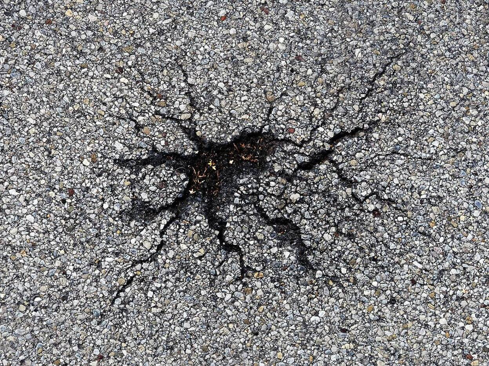
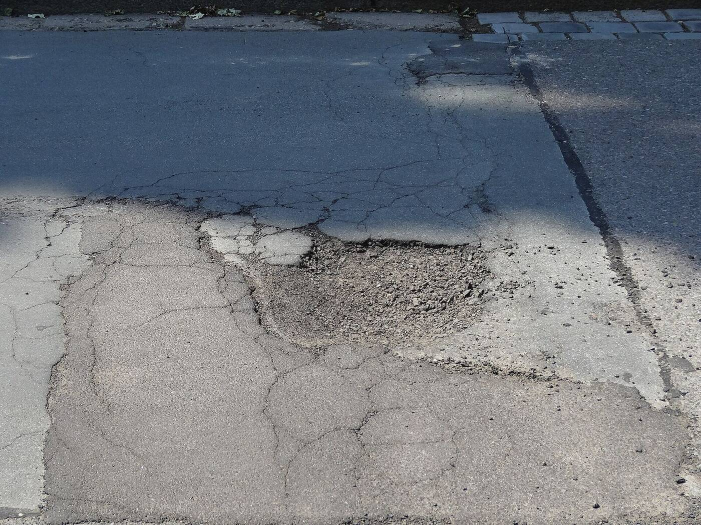
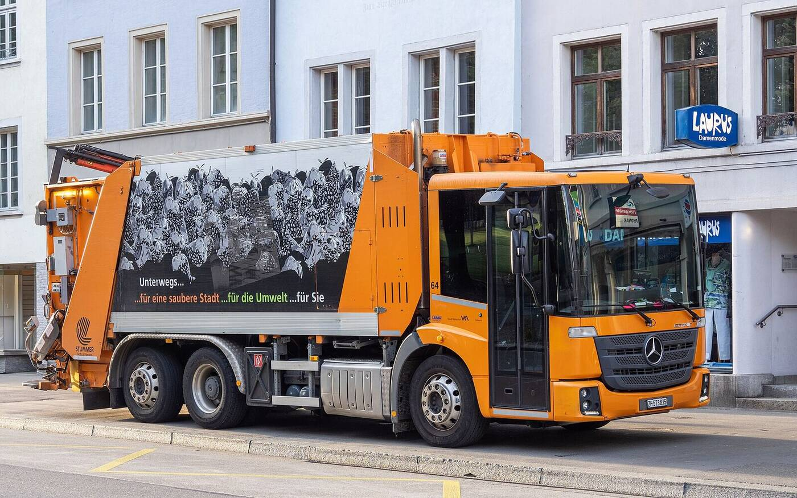

We find potholes before you do.
Garbage trucks already drive every street in Dresden, every week. We put a small camera on them. The city gets a weekly map of road damage, ranked by urgency.
Dresden paid €380,000 for one picture of its roads.
The 2026 survey is out of date after the first winter. The ones before it were in 2015 and 2021. In between, the city hears about new potholes when someone complains or crashes.
Six years of road checks, one square per week. That is about 300 times more checks.
A crack is cheap to fix. A pothole isn't.
Road damage grows slowly, then all at once. Water gets into a crack, freezes, and breaks the asphalt apart. Finding it early is the whole point.




Hairline crack
A crew seals it with hot bitumen in a few minutes. No closed lane, no detour.
Crack network
Water is getting in. A surface patch now stops frost from breaking it open next winter.
Pothole
The asphalt has broken out. The crew cuts the edges and refills it, up to €200 per hole. Bikes and cars are already at risk, and the city is liable.
Broken road
Patches on patches. The whole stretch has to be milled and resurfaced, with a closed street for days.
Studies show early, preventive repairs cut road maintenance spending by 10 to 30 percent.
No extra staff. No extra vehicles.
The truck drives its usual route
Garbage trucks pass every residential street at least every other week.
The camera box spots damage
It runs on the truck's power. The AI works inside the box and blurs faces and number plates before anything leaves the truck.
The city gets a weekly map
Every crack and pothole with a photo, a location and an urgency rank.
One crew fixes a whole cluster
The next pass shows whether the repair held.

One yearly subscription per kilometre of road.
€75 per km per year, cameras included. The city buys no hardware and gets a fresh map every week.
It pays for itself if earlier repairs save just 1% of Dresden's €11.2 million road maintenance budget.
Three months, one district, a few trucks.
We're looking for a pilot district in Dresden and a fleet partner. Let the city see its roads every week, before the next complaint instead of after it.